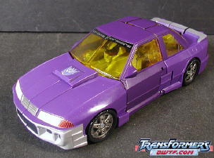
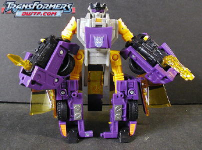

Price : $20 (U.S.)
 Crystal
Widow
Crystal
Widow
Allegiance
: Autobot
Size
: Deluxe
Difficulty of Transformation
: Medium
Color Scheme
: Deep purple, dull
pinkish orange, silver, and some charcoal black, red, transparent orange,
bright lime green, and reddish purple
Rating
: 7.9
(NOTE: Because this is a repaint, this is not a full-blown review. This mainly covers any changes made to the mold and the color scheme, and merely compares it to Beast Machines Blackarachnia. For a review on the mold itself, read the review of Beast Machines Blackarachnia here .)
Really, I could have
taken my snapshots of
Universe Blackarachnia
,
lessened the brightness, and posted them as Crystal Widow, and you wouldn't
be able to tell that I was fooling you. Crystal Widow and Blackarachnia
are THAT similar. They've got the same paint apps and colors, overall.
The ONLY difference between the two (besides the fact that one is an Autobot,
the other a Decepticon) is that Crystal Widow has a rather duller, oddly
pinkish orange in place of Blackarachnia's "normal" orange. That's it.
I mean, even for a Universe Exclusive, this is pathetic. I can't even recommend
this one to die-hard completists. If you're wondering whether to get just
Crystal Widow or Universe Blackarachnia, though, I'd go with Blackarachnia-
the orange on her is a little more appetizing that Crystal Widow's pinkish
orange.
No mold changes have
been made to Crystal Widow. (Heck, they can't be bothered to even give
her a new set of colors, why would they give her a mold change?)
(NOTE: Oil Slick w/ Robot Drone are repaints, so theirs are not full-blown reviews. This mainly covers any changes made to the mold and the color scheme, and merely compares it to Armada Sideswipe w/ Nightbeat. For a review on the mold itself, read the review of Armada Sideswipe w/ Nightbeat here .)
 Robot
Drone
Robot
Drone
Allegiance
: Decepticon?
Size:
Mini-Con
Difficulty of Transformation
: Very
Easy
Color Scheme
: Gunmetal gray, black,
orange-yellow, and some shiny metallic red
Rating
: 1.4
Robot Drone is the EXACT
same as his mold's predecessor, Nightbeat. Nothing has changed. At all.
So nothing really to talk about here.
 Oil
Slick
Oil
Slick


Allegiance
: Decepticon
Size
: Deluxe
Difficulty of Transformation
: Medium
Color Scheme
: Gunmetal gray, orange-yellow,
royal purple, black, transparent amber, and some fluorescent orange, shiny
metallic red, silver, and bright yellow
Powerlinx ports
: 4 (1 gimmicked)
Rating
: 6.7
Oil Slick is at least different enough from Armada Sideswipe to warrant the usage of webspace for pictures, but he's still a pretty lackluster Universe toy. His main change is that the sky blue of Sideswipe has been replaced with nice shade of purple. It does look a little better than the blue overall, but alas, the designers couldn't be bothered to change any other colors on the toy. So his paint apps and "inner robot parts" are the same as on Sideswipe. (Well, the silver used for his bumpers in vehicle mode is of a slightly darker shade, but it's not something you'd notice unless you deliberately compared the two toys.) Oil Slick does have a little mold change from Sideswipe, however- Sideswipe's Autobot symbol has been remolded into a Decepticon symbol for Oil Slick. Which is appropriate, given the changes to his paint job. However, given all the parts of his that are the same as Sideswipe's, it's still just pretty much another lazy Universe exclusive. Yawn.
The Crystal Widow vs. Oil Slick "Battle in a Box" set is yet another lackluster Universe exclusive. Crystal Widow is especially lazy, given that almost nothing has changed, and Oil Slick fares little better, with basically just one major color change and a remolding done to his allegiance symbol. Robot Drone is also a joke, since he's the exact same as his predecessor Nightbeat. So unless you don't have either of the previous versions of these molds, I'd skip this box set, even if you're a completist. I mean, the paint jobs themselves aren't bad, but they're barely different from their previous versions. You wouldn't be getting much for $20.
No Stats
Review by Beastbot